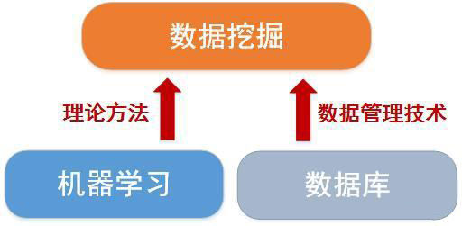

<!DOCTYPE html><html><head><meta charset="utf-8"><title>人工智能、机器学习、数据挖掘以及数据分析有什么联系？（上） | 技术学派</title><meta name="viewport" content="width=device-width,initial-scale=1,maximum-scale=1"><meta name="keywords" content="IT培训, Python, 大数据, 人工智能, Web前端, PHP, python"><meta name="description" content="人工智能是目前炙手可热的一个领域，所有的互联网公司以及各路大迦们纷纷表态人工智能将是下一个时代的革命性技术，可与互联网、移动互联网时代的变更相媲美；AlphaGo在围棋领域战胜人类最顶尖的棋手让大众第一次直观的认识到了人工智能的威力和强大，于是大家都不禁在思考到底什么是人工智能， 它将给人类带来怎样的变化和未来?0.人工智能人工智能英文缩写为AI，它是研究、开发用于模拟、延伸和扩展人的智能的理论、"><meta name="keywords" content="python"><meta property="og:type" content="article"><meta property="og:title" content="人工智能、机器学习、数据挖掘以及数据分析有什么联系？（上）"><meta property="og:url" content="http://www.JiShuXuePai.com/blog/学习答疑/学习答疑/人工智能、机器学习、数据挖掘以及数据分析有什么联系？（上）/index.html"><meta property="og:site_name" content="技术学派"><meta property="og:description" content="人工智能是目前炙手可热的一个领域，所有的互联网公司以及各路大迦们纷纷表态人工智能将是下一个时代的革命性技术，可与互联网、移动互联网时代的变更相媲美；AlphaGo在围棋领域战胜人类最顶尖的棋手让大众第一次直观的认识到了人工智能的威力和强大，于是大家都不禁在思考到底什么是人工智能， 它将给人类带来怎样的变化和未来?0.人工智能人工智能英文缩写为AI，它是研究、开发用于模拟、延伸和扩展人的智能的理论、"><meta property="og:locale" content="zh-CN"><meta property="og:image" content="http://www.jishuxuepai.com/blog/学习答疑/学习答疑/人工智能、机器学习、数据挖掘以及数据分析有什么联系？（上）/01.jpg"><meta property="og:updated_time" content="2018-07-05T03:46:55.000Z"><meta name="twitter:card" content="summary"><meta name="twitter:title" content="人工智能、机器学习、数据挖掘以及数据分析有什么联系？（上）"><meta name="twitter:description" content="人工智能是目前炙手可热的一个领域，所有的互联网公司以及各路大迦们纷纷表态人工智能将是下一个时代的革命性技术，可与互联网、移动互联网时代的变更相媲美；AlphaGo在围棋领域战胜人类最顶尖的棋手让大众第一次直观的认识到了人工智能的威力和强大，于是大家都不禁在思考到底什么是人工智能， 它将给人类带来怎样的变化和未来?0.人工智能人工智能英文缩写为AI，它是研究、开发用于模拟、延伸和扩展人的智能的理论、"><meta name="twitter:image" content="http://www.jishuxuepai.com/blog/学习答疑/学习答疑/人工智能、机器学习、数据挖掘以及数据分析有什么联系？（上）/01.jpg"><link rel="stylesheet" href="/libs/bootstrap/bootstrap-grid.css"><link rel="stylesheet" href="/libs/font-awesome/css/font-awesome.min.css"><link rel="stylesheet" href="/libs/titillium-web/styles.css"><link rel="stylesheet" href="/libs/source-code-pro/styles.css"><link rel="stylesheet" href="/css/style.css"><script src="/libs/jquery/jquery.min.js"></script><link rel="stylesheet" href="/libs/lightgallery/css/lightgallery.min.css"><link rel="stylesheet" href="/libs/justified-gallery/justifiedGallery.min.css"><script>var _hmt=_hmt||[];!function(){var e=document.createElement("script");e.src="//hm.baidu.com/hm.js?4c1bd812de3c30edbaa2b803c66f0a04";var t=document.getElementsByTagName("script")[0];t.parentNode.insertBefore(e,t)}()</script></head></html><body><div id="wrap"><header id="header"><div id="header-outer" class="outer"><div class="container"><div class="container-inner"><div id="header-title"><h1 class="logo-wrap"><a href="/" class="logo"></a></h1></div><div id="header-inner" class="nav-container"><a id="main-nav-toggle" class="nav-icon fa fa-bars">菜单</a><div class="nav-container-inner"><ul id="main-nav"><li class="main-nav-list-item"><a class="main-nav-list-link" href="/">主页</a></li><li class="main-nav-list-item"><a class="main-nav-list-link" href="/edu/index.html">学编程</a></li><li class="main-nav-list-item"><a class="main-nav-list-link" href="/blog/">博客</a></li><li class="main-nav-list-item"><a class="main-nav-list-link" href="/tips.html">学习建议</a></li><li class="main-nav-list-item"><a class="main-nav-list-link" href="/about.html">关于</a></li></ul><nav id="sub-nav"><div id="search-form-wrap"><form class="search-form"><input type="text" class="ins-search-input search-form-input" placeholder="搜索"> <button type="submit" class="search-form-submit"></button></form><div class="ins-search"><div class="ins-search-mask"></div><div class="ins-search-container"><div class="ins-input-wrapper"><input type="text" class="ins-search-input" placeholder="想要查找什么..."> <span class="ins-close ins-selectable"><i class="fa fa-times-circle"></i></span></div><div class="ins-section-wrapper"><div class="ins-section-container"></div></div></div></div><script>window.INSIGHT_CONFIG={TRANSLATION:{POSTS:"文章",PAGES:"页面",CATEGORIES:"分类",TAGS:"标签",UNTITLED:"(未命名)"},ROOT_URL:"/",CONTENT_URL:"/content.json"}</script><script src="/js/insight.js"></script></div></nav></div></div></div></div></div></header><div class="container"><div class="main-body container-inner"><div class="main-body-inner"><section id="main"><div class="main-body-header"><h1 class="header"><a class="page-title-link" href="/categories/学习答疑/">学习答疑</a><div class="author"></div></h1></div><div class="main-body-content"><article id="post-学习答疑/人工智能、机器学习、数据挖掘以及数据分析有什么联系？（上）" class="article article-single article-type-post" itemscope itemprop="blogPost"><div class="article-inner"><header class="article-header"><h1 class="article-title" itemprop="name">人工智能、机器学习、数据挖掘以及数据分析有什么联系？（上）</h1></header><div class="article-meta"><div class="article-date"><a href="/blog/学习答疑/学习答疑/人工智能、机器学习、数据挖掘以及数据分析有什么联系？（上）/" class="article-date"><time datetime="2018-06-28T01:57:54.000Z" itemprop="datePublished">2018-06-28</time></a></div><div class="article-tag"><i class="fa fa-tag"></i> <a class="tag-link" href="/tags/python/">python</a></div></div><div class="article-entry" itemprop="articleBody"><p>人工智能是目前炙手可热的一个领域，所有的互联网公司以及各路大迦们纷纷表态人工智能将是下一个时代的革命性技术，可与互联网、移动互联网时代的变更相媲美；AlphaGo在围棋领域战胜人类最顶尖的棋手让大众第一次直观的认识到了人工智能的威力和强大，于是大家都不禁在思考到底什么是人工智能， 它将给人类带来怎样的变化和未来?<br></p><h3 id="0-人工智能"><a href="#0-人工智能" class="headerlink" title="0.人工智能"></a>0.人工智能</h3><p>人工智能英文缩写为AI，它是研究、开发用于模拟、延伸和扩展人的智能的理论、方法、技术及应用系统的一门新的技术科学。人工智能是计算机科学研究领域的一个重要分支，又是众多学科的一个交叉学科，它企图了解智能的实质，并生产出一种新的能以人类智能相似的方式做出反应的智能机器，该领域的研究包括语音识别、图像识别、机器人、自然语言处理、智能搜索和专家系统等等，人工智能可以对人的意识、思维的信息过程的模拟。人工智能包括众多的分支领域，比如大家熟悉的机器学习、自然语言理解和模式识别等。</p><p></p><h3 id="1-机器学习"><a href="#1-机器学习" class="headerlink" title="1.机器学习"></a>1.机器学习</h3><p>机器学习属于人工智能研究与应用的一个分支领域。机器学习的研究更加偏向理论性，其目的更偏向于是研究一种为了让计算机不断从数据中学习知识，而使机器学习得到的结果不断接近目标函数的理论。</p><p>机器学习，引用卡内基梅隆大学机器学习研究领域的著名教授Tom Mitchell的经典定义：</p><blockquote><p>如果一个程序在使用既有的经验E(Experience)来执行某类任务T(Task)的过程中被认为是“具备学习能力的”，那么它一定要展现出：利用现有的经验E，不断改善其完成既定任务T的性能(Performance)的特质。</p></blockquote><p><strong>那机器学习与数据挖掘的关系是什么呢？　</strong></p><p>机器学习已经有了十分广泛的应用，例如：数据挖掘、计算机视觉、自然语言处理、生物特征识别、搜索引擎、医学诊断、检测信用卡欺诈、证券市场分析、DNA序列测序、语音和手写识别、战略游戏和机器人运用。在我们当下的生活中，语音输入识别、手写输入识别等技术，识别率相比之前若干年的技术识别率提升非常巨大，达到了将近97%以上，大家可以在各自的手机上体验这些功能，这些技术来自于机器学习技术的应用。</p><p>那机器学习与数据挖掘的联系是什么呢？</p><p>机器学习为数据挖掘提供了理论方法，而数据挖掘技术是机器学习技术的一个实际应用。逐步开发和应用了若干新的分析方法逐步演变而来形成的；这两个领域彼此之间交叉渗透，彼此都会利用对方发展起来的技术方法来实现业务目标，数据挖掘的概念更广，机器学习只是数据挖掘领域中的一个新兴分支与细分领域，只不过基于大数据技术让其逐渐成为了当下显学和主流。</p><p></p><h3 id="2-数据挖掘"><a href="#2-数据挖掘" class="headerlink" title="2.数据挖掘"></a>2.数据挖掘</h3><p>数据挖掘一般是指从大量的数据中通过算法搜索隐藏于其中信息的过程。数据挖掘本质上像是机器学习和人工智能的基础，它的主要目的是从各种各样的数据来源中，提取出超集的信息，然后将这些信息合并让你发现你从来没有想到过的模式和内在关系。这就意味着，数据挖掘不是一种用来证明假说的方法，而是用来构建各种各样的假说的方法。数据挖掘不能告诉你这些问题的答案，他只能告诉你，A和B可能存在相关关系，但是它无法告诉你A和B存在什么相关关系。机器学习是从假设空间H中寻找假设函数g近似目标函数f。数据挖掘是从大量的数据中寻找数据相互之间的特性。</p><p>数据挖掘是基于数据库系统的数据发现过程，立足与数据分析技术之上，提供给为高端和高级的规律趋势发现以及预测功能；同时数据量将变得更为庞大，依赖于模式识别等计算机前沿的技术；其还有另外一个名称为商业智能(BI, Business Intelligence)，依托于超大型数据库以及数据仓库、数据集市等数据库技术来完成。</p><p>主要挖掘方法有: 分类 、 估计、预测、相关性分组或关联规则、 聚类、复杂数据类型挖掘(Text, Web ,图形图像，视频，音频等)等技术。</p><p></p></div><footer class="article-footer"><a data-url="http://www.JiShuXuePai.com/blog/学习答疑/学习答疑/人工智能、机器学习、数据挖掘以及数据分析有什么联系？（上）/" data-id="cjjgevllh0049z8fycre2tl2l" class="article-share-link"><i class="fa fa-share"></i>分享到</a><script>!function(n){n("body").on("click",function(){n(".article-share-box.on").removeClass("on")}).on("click",".article-share-link",function(t){t.stopPropagation();var e,a=n(this),o=a.attr("data-url"),r=encodeURIComponent(o),i="article-share-box-"+a.attr("data-id"),s=a.offset();if(n("#"+i).length){if((e=n("#"+i)).hasClass("on"))return void e.removeClass("on")}else{var l=['<div id="'+i+'" class="article-share-box">','<input class="article-share-input" value="'+o+'">','<div class="article-share-links">','<a href="https://twitter.com/intent/tweet?url='+r+'" class="article-share-twitter" target="_blank" title="Twitter"></a>','<a href="https://www.facebook.com/sharer.php?u='+r+'" class="article-share-facebook" target="_blank" title="Facebook"></a>','<a href="http://pinterest.com/pin/create/button/?url='+r+'" class="article-share-pinterest" target="_blank" title="Pinterest"></a>','<a href="https://plus.google.com/share?url='+r+'" class="article-share-google" target="_blank" title="Google+"></a>',"</div>","</div>"].join("");e=n(l),n("body").append(e)}n(".article-share-box.on").hide(),e.css({top:s.top+25,left:s.left}).addClass("on")}).on("click",".article-share-box",function(t){t.stopPropagation()}).on("click",".article-share-box-input",function(){n(this).select()}).on("click",".article-share-box-link",function(t){t.preventDefault(),t.stopPropagation(),window.open(this.href,"article-share-box-window-"+Date.now(),"width=500,height=450")})}(jQuery)</script></footer></div></article><section id="comments"><div id="gitalk_frame"></div></section></div></section><aside id="sidebar"><a class="sidebar-toggle" title="Expand Sidebar"><i class="toggle icon"></i></a><div class="sidebar-top"><p>关注我 :</p><ul class="social-links"><li><a class="social-tooltip" title="火星时代" href="http://edu.hxsd.com/edunew/topics/webfull/index.html" target="_blank"><i class="icon fa fa-dribbble"></i></a></li><li><a class="social-tooltip" title="weibo" href="#" target="_blank"><i class="icon fa fa-weibo"></i></a></li><li><a class="social-tooltip" title="rss" href="/atom.xml" target="_blank"><i class="icon fa fa-rss"></i></a></li></ul></div><nav id="article-nav"><a href="/blog/学习答疑/学习答疑/什么是GO语言？为什么GO语言是最有潜力的编程语言？/" id="article-nav-newer" class="article-nav-link-wrap"><strong class="article-nav-caption">下一篇</strong><p class="article-nav-title">什么是GO语言？为什么GO语言是最有潜力的编程语言</p><i class="icon fa fa-chevron-right" id="icon-chevron-right"></i> </a><a href="/blog/学习答疑/学习答疑/人工智能领域的职业所需技能是什么？你知道吗？/" id="article-nav-older" class="article-nav-link-wrap"><strong class="article-nav-caption">上一篇</strong><p class="article-nav-title">人工智能领域的职业所需技能是什么？你知道吗？</p><i class="icon fa fa-chevron-left" id="icon-chevron-left"></i></a></nav><div class="widgets-container"><div class="widget-wrap widget-list"><h3 class="widget-title">分类</h3><div class="widget"><ul class="category-list"><li class="category-list-item"><a class="category-list-link" href="/categories/animate/">animate</a><span class="category-list-count">17</span></li><li class="category-list-item"><a class="category-list-link" href="/categories/git/">git</a><span class="category-list-count">1</span></li><li class="category-list-item"><a class="category-list-link" href="/categories/html/">html</a><span class="category-list-count">2</span></li><li class="category-list-item"><a class="category-list-link" href="/categories/js/">js</a><span class="category-list-count">5</span></li><li class="category-list-item"><a class="category-list-link" href="/categories/php/">php</a><span class="category-list-count">3</span></li><li class="category-list-item"><a class="category-list-link" href="/categories/vue/">vue</a><span class="category-list-count">1</span></li><li class="category-list-item"><a class="category-list-link" href="/categories/学习答疑/">学习答疑</a><span class="category-list-count">43</span></li><li class="category-list-item"><a class="category-list-link" href="/categories/插件资源库/">插件资源库</a><span class="category-list-count">4</span></li></ul></div></div><link rel="stylesheet" href="/css/tech/toc.css"><div class="widget-wrap widget-list widget-toc"><h3 class="widget-title">目录</h3><div class="widget"><div class="toc"></div><link rel="stylesheet" href="https://cdnjs.cloudflare.com/ajax/libs/tocbot/3.0.5/tocbot.css"><script src="https://cdnjs.cloudflare.com/ajax/libs/tocbot/3.0.5/tocbot.min.js"></script><script>$(function(){$(".main-body-content").find("h1,h2,h3").each(function(t){$(this).attr("id")||$(this).attr("id","list"+t)}),tocbot.init({tocSelector:".toc",contentSelector:".main-body-content",headingSelector:"h1, h2, h3",collapseDepth:2,positionFixedSelector:".widget-toc",fixedSidebarOffset:595,includeHtml:!1})})</script></div></div><div class="widget-wrap widget-list"><h3 class="widget-title">标签</h3><div class="widget"><ul class="tag-list"><li class="tag-list-item"><a class="tag-list-link" href="/tags/C/">C</a><span class="tag-list-count">2</span></li><li class="tag-list-item"><a class="tag-list-link" href="/tags/go/">go</a><span class="tag-list-count">1</span></li><li class="tag-list-item"><a class="tag-list-link" href="/tags/php/">php</a><span class="tag-list-count">1</span></li><li class="tag-list-item"><a class="tag-list-link" href="/tags/python/">python</a><span class="tag-list-count">17</span></li><li class="tag-list-item"><a class="tag-list-link" href="/tags/web前端/">web前端</a><span class="tag-list-count">2</span></li></ul></div></div><div class="widget-wrap widget-float"><h3 class="widget-title">标签云</h3><div class="widget tagcloud"><a href="/tags/C/" style="font-size:15px">C</a> <a href="/tags/go/" style="font-size:10px">go</a> <a href="/tags/php/" style="font-size:10px">php</a> <a href="/tags/python/" style="font-size:20px">python</a> <a href="/tags/web前端/" style="font-size:15px">web前端</a></div></div><div class="widget-wrap widget-list"><h3 class="widget-title">链接</h3><div class="widget"><ul><li><a href="http://edu.hxsd.com/edunew/topics/webfull/index.html">火星时代</a></li></ul></div></div></div></aside><script>$(function(){$(window).scroll(function(){240<=$(document).scrollTop()?($("#sidebar .sidebar-toggle").addClass("fix"),"block"==$("#sidebar .sidebar-toggle").css("display")&&$(".is-position-fixed").css("top","35px")):$("#sidebar .sidebar-toggle").removeClass("fix")})})</script></div></div></div><footer id="footer"><div class="top"><div class="inner"><div class="list"><div class="left clearfix"><dl><dt>关于我们</dt><dd><a href="/about.html" target="_blank">公司简介</a></dd><dd><a href="edu/index.html" target="_blank">联系我们</a></dd></dl><dl><dt>校区攻略</dt><dd><a href="edu/index.html" target="_blank">校区环境</a></dd><dd><a href="edu/index.html" target="_blank">住宿攻略</a></dd><dd><a href="edu/index.html" target="_blank">来校路线</a></dd></dl><dl><dt>课程培训</dt><dd><a href="edu/python.html" target="_blank">Python</a></dd><dd><a href="edu/python.html" target="_blank">Web前端</a></dd><dd><a href="edu/python.html" target="_blank">PHP</a></dd><dd><a href="edu/python.html" target="_blank">人工智能</a></dd><dd><a href="edu/python.html" target="_blank">大数据</a></dd></dl><dl><dt>常见问答</dt><dd><a href="edu/index.html" target="_blank">学费学时</a></dd><dd><a href="edu/index.html" target="_blank">学习方法</a></dd></dl></div></div><div class="tel"><tel>176-0025-8815</tel><span>北京市海淀区杏石口路81号火星时代大厦</span></div><div class="weixin"><div class="w1"> <span>头条号</span></div><div class="w1"> <span>官方微信</span></div></div></div></div><div class="bot">Copyright 2018 技术学派 京ICP备15015508号-3</div></footer><link rel="stylesheet" href="https://unpkg.com/gitalk/dist/gitalk.css"><script src="https://unpkg.com/gitalk/dist/gitalk.min.js"></script><script>var gitalk=new Gitalk({clientID:"2fbbb9980b49019d99a7",clientSecret:"152dd10e83ef6595761ea2185304f9ac8263573f",repo:"jsxp",owner:"li-kang",admin:["li-kang"]});gitalk.render("gitalk_frame")</script><script src="/libs/lightgallery/js/lightgallery.min.js"></script><script src="/libs/lightgallery/js/lg-thumbnail.min.js"></script><script src="/libs/lightgallery/js/lg-pager.min.js"></script><script src="/libs/lightgallery/js/lg-autoplay.min.js"></script><script src="/libs/lightgallery/js/lg-fullscreen.min.js"></script><script src="/libs/lightgallery/js/lg-zoom.min.js"></script><script src="/libs/lightgallery/js/lg-hash.min.js"></script><script src="/libs/lightgallery/js/lg-share.min.js"></script><script src="/libs/lightgallery/js/lg-video.min.js"></script><script src="/libs/justified-gallery/jquery.justifiedGallery.min.js"></script><script src="/js/main.js"></script></div></body>